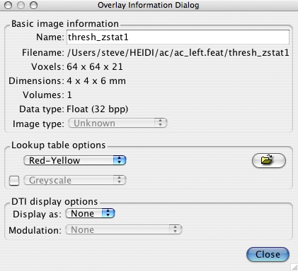

To view information about an image, select the image in the Image List and press the Image Info) button . 
| Name: | Name of the image; can be edited (e.g. to disambiguate two image of the same name) |
| Filename: | Original filename of image |
| Voxels: | 3D image matrix size (number of voxels in X, Y & Z) |
| Dimensions: | Dimensions (size) of a single voxel (mm) |
| Volumes: | Size of the image in the 4th dimension (e.g. time) |
| Data type: | Data type the voxel intensity is represented in (floating point, integer etc.) |
| Image type: | Type of image (e.g. z-statistic) - not many images have this flag set yet |
| Lookup table options | Controls the greyscale or colour-scale lookup table used. Press the file selector for a LUT file not already on the menus. If the second LUT is activated (by turning on the checkbox), this is used for negative values, and the first LUT is used for positive values. In this case the bricon controls are set wrt the first LUT and should therefore be positive values (the same range, but negative, is then used for the second LUT). |
| DTI display options | Selects DTI image display mode. Can be RGB or Lines. |